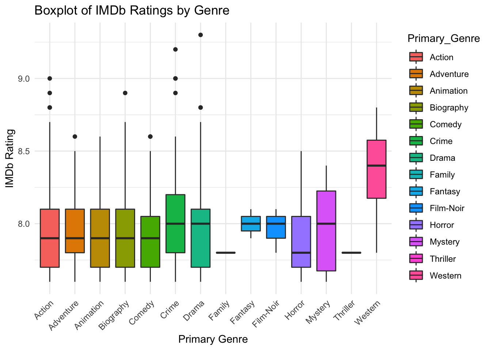

In this lab session, we will analyze IMDb movie ratings across different genres to determine if there are significant differences in ratings. We will use a sample movie dataset to:
# Load necessary libraries
library(tidyverse)
# Load the dataset
imdb_data <- read.csv("imdb_top_1000.csv")
# Display the first few rows
head(imdb_data)Extract the primary genre and handle missing data.
# Extract the primary genre (first genre listed)
imdb_data <- imdb_data %>%
mutate(Primary_Genre = sapply(strsplit(as.character(Genre), ","), `[`, 1))
# Convert Primary_Genre and IMDB_Rating to appropriate data types
imdb_data$Primary_Genre <- as.factor(imdb_data$Primary_Genre)
imdb_data$IMDB_Rating <- as.numeric(imdb_data$IMDB_Rating)
# Remove rows with missing ratings or genres
imdb_data <- na.omit(imdb_data[, c("Primary_Genre", "IMDB_Rating")])# One-way ANOVA
anova_result <- aov(IMDB_Rating ~ Primary_Genre, data = imdb_data)
# Display ANOVA summary
summary(anova_result)## Df Sum Sq Mean Sq F value Pr(>F)
## Primary_Genre 13 1.65 0.12724 1.692 0.0574 .
## Residuals 986 74.17 0.07522
## ---
## Signif. codes: 0 '***' 0.001 '**' 0.01 '*' 0.05 '.' 0.1 ' ' 1If the ANOVA result is significant, perform a Tukey’s HSD test to identify which genres differ.
# Tukey's HSD test
tukey_result <- TukeyHSD(anova_result)
# Display the results
print(tukey_result)## Tukey multiple comparisons of means
## 95% family-wise confidence level
##
## Fit: aov(formula = IMDB_Rating ~ Primary_Genre, data = imdb_data)
##
## $Primary_Genre
## diff lwr upr p adj
## Adventure-Action -1.191860e-02 -0.1413491135 0.11751190 1.0000000
## Animation-Action -1.893080e-02 -0.1426730262 0.10481143 0.9999997
## Biography-Action -1.078224e-02 -0.1316340990 0.11006962 1.0000000
## Comedy-Action -4.812828e-02 -0.1502495083 0.05399294 0.9500042
## Crime-Action 6.740383e-02 -0.0461281533 0.18093580 0.7701356
## Drama-Action 8.020842e-03 -0.0807784568 0.09682014 1.0000000
## Family-Action -1.494186e-01 -0.8052128780 0.50637567 0.9999654
## Fantasy-Action 5.058140e-02 -0.6052128780 0.70637567 1.0000000
## Film-Noir-Action 1.724806e-02 -0.5197421758 0.55423830 1.0000000
## Horror-Action -4.032770e-02 -0.3270999932 0.24644460 0.9999999
## Mystery-Action 2.558140e-02 -0.2497313278 0.30089412 1.0000000
## Thriller-Action -1.494186e-01 -1.0741828822 0.77534567 0.9999994
## Western-Action 4.005814e-01 -0.0657926057 0.86695540 0.1845735
## Animation-Adventure -7.012195e-03 -0.1559343813 0.14190999 1.0000000
## Biography-Adventure 1.136364e-03 -0.1453929867 0.14766571 1.0000000
## Comedy-Adventure -3.620968e-02 -0.1677179425 0.09529859 0.9997063
## Crime-Adventure 7.932243e-02 -0.0612307241 0.21987558 0.8278322
## Drama-Adventure 1.993945e-02 -0.1015142253 0.14139312 0.9999993
## Family-Adventure -1.375000e-01 -0.7985081753 0.52350818 0.9999881
## Fantasy-Adventure 6.250000e-02 -0.5985081753 0.72350818 1.0000000
## Film-Noir-Adventure 2.916667e-02 -0.5141787064 0.57251204 1.0000000
## Horror-Adventure -2.840909e-02 -0.3269120718 0.27009389 1.0000000
## Mystery-Adventure 3.750000e-02 -0.2500113467 0.32501135 1.0000000
## Thriller-Adventure -1.375000e-01 -1.0659689806 0.79096898 0.9999998
## Western-Adventure 4.125000e-01 -0.0611775146 0.88617751 0.1675499
## Biography-Animation 8.148559e-03 -0.1333814115 0.14967853 1.0000000
## Comedy-Animation -2.919748e-02 -0.1551113646 0.09671640 0.9999576
## Crime-Animation 8.633463e-02 -0.0489985604 0.22166781 0.6697503
## Drama-Animation 2.695164e-02 -0.0884211297 0.14232441 0.9999538
## Family-Animation -1.304878e-01 -0.7904057466 0.52943014 0.9999935
## Fantasy-Animation 6.951220e-02 -0.5904057466 0.72943014 1.0000000
## Film-Noir-Animation 3.617886e-02 -0.5058396586 0.57819738 1.0000000
## Horror-Animation -2.139690e-02 -0.3174778165 0.27468402 1.0000000
## Mystery-Animation 4.451220e-02 -0.2404836933 0.32950808 0.9999996
## Thriller-Animation -1.304878e-01 -1.0581809276 0.79720532 0.9999999
## Western-Animation 4.195122e-01 -0.0526427263 0.89166712 0.1444755
## Comedy-Biography -3.734604e-02 -0.1604205662 0.08572848 0.9991631
## Crime-Biography 7.818607e-02 -0.0545094651 0.21088160 0.7794809
## Drama-Biography 1.880308e-02 -0.0934640509 0.13107022 0.9999991
## Family-Biography -1.386364e-01 -0.7980184401 0.52074571 0.9999865
## Fantasy-Biography 6.136364e-02 -0.5980184401 0.72074571 1.0000000
## Film-Noir-Biography 2.803030e-02 -0.5133356632 0.56939627 1.0000000
## Horror-Biography -2.954545e-02 -0.3244300838 0.26533917 1.0000000
## Mystery-Biography 3.636364e-02 -0.2473892304 0.32011650 1.0000000
## Thriller-Biography -1.386364e-01 -1.0659483731 0.78867565 0.9999998
## Western-Biography 4.113636e-01 -0.0600420305 0.88276930 0.1651001
## Crime-Comedy 1.155321e-01 -0.0003630061 0.23142722 0.0516588
## Drama-Comedy 5.614912e-02 -0.0356521974 0.14795044 0.7310799
## Family-Comedy -1.012903e-01 -0.7574978325 0.55491719 0.9999997
## Fantasy-Comedy 9.870968e-02 -0.5574978325 0.75491719 0.9999998
## Film-Noir-Comedy 6.537634e-02 -0.4721184770 0.60287117 1.0000000
## Horror-Comedy 7.800587e-03 -0.2799154503 0.29551662 1.0000000
## Mystery-Comedy 7.370968e-02 -0.2025859300 0.35000528 0.9997927
## Thriller-Comedy -1.012903e-01 -1.0263476917 0.82376705 1.0000000
## Western-Comedy 4.487097e-01 -0.0182452198 0.91566457 0.0742746
## Drama-Crime -5.938298e-02 -0.1637297510 0.04496378 0.8190955
## Family-Crime -2.168224e-01 -0.8749022589 0.44125740 0.9980345
## Fantasy-Crime -1.682243e-02 -0.6749022589 0.64125740 1.0000000
## Film-Noir-Crime -5.015576e-02 -0.5899348366 0.48962331 1.0000000
## Horror-Crime -1.077315e-01 -0.3996926195 0.18422958 0.9939984
## Mystery-Crime -4.182243e-02 -0.3225358567 0.23889100 0.9999998
## Thriller-Crime -2.168224e-01 -1.1432089051 0.70956405 0.9999528
## Western-Crime 3.331776e-01 -0.1364048416 0.80275998 0.4916256
## Family-Drama -1.574394e-01 -0.8117061096 0.49682722 0.9999351
## Fantasy-Drama 4.256055e-02 -0.6117061096 0.69682722 1.0000000
## Film-Noir-Drama 9.227220e-03 -0.5258963666 0.54435081 1.0000000
## Horror-Drama -4.834854e-02 -0.3316100567 0.23491298 0.9999989
## Mystery-Drama 1.756055e-02 -0.2540933314 0.28921444 1.0000000
## Thriller-Drama -1.574394e-01 -1.0811210510 0.76624216 0.9999989
## Western-Drama 3.925606e-01 -0.0716629341 0.85678404 0.2049787
## Fantasy-Family 2.000000e-01 -0.7220876749 1.12208767 0.9999805
## Film-Noir-Family 1.666667e-01 -0.6750803659 1.00841370 0.9999934
## Horror-Family 1.090909e-01 -0.5997235249 0.81790534 0.9999997
## Mystery-Family 1.750000e-01 -0.5292560946 0.87925609 0.9999065
## Thriller-Family -6.217249e-15 -1.1293221507 1.12932215 1.0000000
## Western-Family 5.500000e-01 -0.2485513509 1.34855135 0.5436231
## Film-Noir-Fantasy -3.333333e-02 -0.8750803659 0.80841370 1.0000000
## Horror-Fantasy -9.090909e-02 -0.7997235249 0.61790534 1.0000000
## Mystery-Fantasy -2.500000e-02 -0.7292560946 0.67925609 1.0000000
## Thriller-Fantasy -2.000000e-01 -1.3293221507 0.92932215 0.9999983
## Western-Fantasy 3.500000e-01 -0.4485513509 1.14855135 0.9720414
## Horror-Film-Noir -5.757576e-02 -0.6581673730 0.54301586 1.0000000
## Mystery-Film-Noir 8.333333e-03 -0.5868717014 0.60353837 1.0000000
## Thriller-Film-Noir -1.666667e-01 -1.2314018012 0.89806847 0.9999996
## Western-Film-Noir 3.833333e-01 -0.3209227612 1.08758943 0.8622025
## Mystery-Horror 6.590909e-02 -0.3189920243 0.45081021 0.9999988
## Thriller-Horror -1.090909e-01 -1.0721800752 0.85399826 1.0000000
## Western-Horror 4.409091e-01 -0.0974741201 0.97929230 0.2504262
## Thriller-Mystery -1.750000e-01 -1.1347392806 0.78473928 0.9999975
## Western-Mystery 3.750000e-01 -0.1573675673 0.90736757 0.5043727
## Western-Thriller 5.500000e-01 -0.4809253611 1.58092536 0.8789044# Boxplot of IMDb Ratings by Primary Genre
ggplot(imdb_data, aes(x = Primary_Genre, y = IMDB_Rating, fill = Primary_Genre)) +
geom_boxplot() +
theme_minimal() +
labs(
title = "Boxplot of IMDb Ratings by Genre",
x = "Primary Genre",
y = "IMDb Rating"
) +
theme(axis.text.x = element_text(angle = 45, hjust = 1))